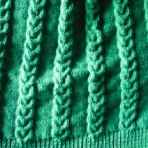
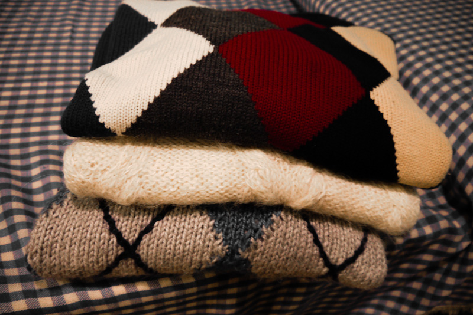

Internacionales
Escote en V cerrado
Lana merino color aceituna y punto inglés.
Historias y técnica
Lana merino color aceituna y punto inglés.

Un diseño sobrio de cuello en V.

Texturas, técnica y tradición en una pieza de lana.

Cada prenda combina tiempo, detalle y oficio.